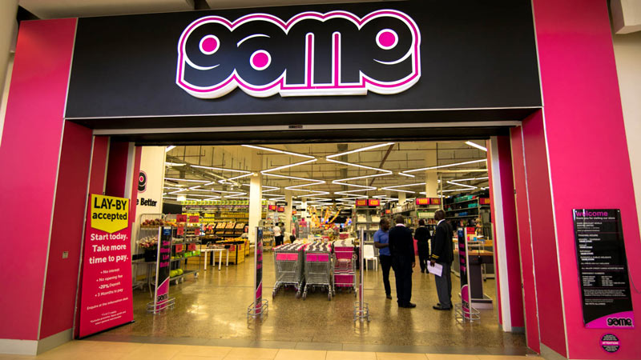

GAME
The first GAME store opened in Durban, South Africa, in 1970. It was born out of the belief by its founders that shopping had become a tedious and boring pastime. They wanted to create a fun shopping environment and so conceptualized retailing as a game. The signature shocking pink has still prevailed to this day. We operate out of 150 stores in 12 African countries..

We offer peace of mind At Game, we put our customers first with our three guarantees: 1. We beat any price! We will not be undersold! - If you've purchased any item from Game and, within 21 days, find the identical product at a competitor for less, tell us and we will refund MORE than the difference. If you intend purchasing from Game and find the identical item at a competitor for less at the same time, tell us and we will BEAT that price. For more information on Price Beat click here. 2. We'll swop it, if we stock it If you've changed your mind - bring it back in an unused condition, in the original packaging, and we will either exchange it or refund you. Exceptions are indicated accordingly at point-of-purchase. If you don’t have proof of purchase (Game till slip) the refund/exchange will be for the lowest price in the last 30 days. 3. Guaranteed service on every product sold We will have any item under manufacturer's warranty repaired for you - should that take longer than 21 days, the item will be replaced or refunded. For warranty purposes, proof of purchase is required. We also ensure ongoing service on any product bought from Game even after the warranty expires..